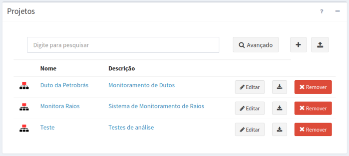

Projetos
Um projeto na plataforma TerraMA2 engloba todas as definições para o desenvolvimento do sistema de monitoramento, isto é, os servidores de dados que serão utilizados, dados dinâmicos, dados estáticos, análises, visualizações e alertas para usuários finais. As principais características do projeto são:
- Apenas um projeto pode ser ativado em cada sessão;
- Um projeto é definido por qualquer usuário, administrador ou não;
- Um usuário pode definir um ou mais projetos;
- Nome de projeto é único para uma instância do TerraMA2;
- Um projeto pode ser protegido de alterações ou modificações pelo usuário que o criou.
A Figura 2.6 mostra a lista de projetos na área de trabalho quando o menu “Projetos” é selecionado.

Figura 2.6 – Módulo de Administração: lista de Projetos.
As opções de manipulação de projeto são:
- ADICIONANDO UM PROJETO:
Para adicionar um novo projeto é necessário que um usuário esteja conectado. No menu de opções selecione “Projetos” para que a lista de projetos disponíveis seja apresentada na área de trabalho. Clique no botão “ + ” para adicionar novo projeto. Utilize o botão “Salvar” para salvar o projeto. Não é permitido nomes de projetos em duplicidade. Botão “Cancelar” volta à tela anterior sem salvar o projeto. Detalhes da adição de um novo usuário veja aqui.
- EDITAR UM PROJETO:
Para editar um projeto previamente criado é necessário que um usuário esteja conectado. No menu de opções selecione “Projetos” para que a lista de projetos disponíveis seja apresentada na área de trabalho. Clique em “Editar” na frente do nome do projeto desejado para abrir as propriedades. Faça as alterações desejadas e utilize o botão “Salvar” para salvar. Botão “Cancelar” volta à tela anterior sem salvar alterações. A Figura 2.7 acima mostra a área de trabalho para editar o projeto.
- ATIVANDO UM PROJETO:
Para ter acesso ao conteúdo de um projeto este deve estar ativo. Somente um projeto pode ser ativado em cada sessão do usuário. No menu de opções selecione “Projetos” para que a lista de projetos disponíveis seja apresentada na área de trabalho. Clique no nome ou na descrição de um projeto disponível. O nome do projeto ativo ficará em destaque na barra de opções e automaticamente o menu de “Situação Atual” do sistema é apresentado.
- REMOVENDO UM PROJETO:
Para remover um projeto somente o usuário proprietário poderá fazer. No menu “Administração” clique “Projetos” para apresentar a lista de projetos disponíveis na área de trabalho. Na frente do nome do projeto clique em “Remover”. Clique o botão “OK” para confirmar remoção.
Importante: Os dados coletados e armazenados pelo projeto não serão removidos da base de dados, isto é, os dados geográficos na forma de arquivos ou tabela do PostGIS permanecerão inalterados. Não será possível recuperar um projeto removido a não ser que exista uma cópia em um arquivo da plataforma para ser importado.
- EXPORTAR UM PROJETO:
Todo o conteúdo de um projeto (metadados somente) ou partes do mesmo pode ser exportado para um documento no formato JSON (Java Script Object Notation). Para exportar um projeto clique no menu “Projetos” para apresentar a lista de projetos disponíveis na área de trabalho. Na frente do nome do projeto clique em “”. Uma janela será apresentada para selecionar quais itens do projeto devem ser exportados. O padrão é exportar todo conteúdo, mas se desejar, abra os itens do projeto com o botão “ + ” e marque ou desmarque o item desejado. Clique o botão “Exportar” para confirmar exportação dos itens marcados.
Figura 2.8 – Módulo de Administração: Seleção de itens do projeto a exportar.
DICA: Como a exportação utiliza a interface do navegador para salvar arquivos de “download”, pode ser necessário mudar o parâmetro de preferência para permitir que o arquivo seja salvo com o nome desejado e na pasta de sua escolha.
- IMPORTAR UM PROJETO:
Todo o conteúdo de um projeto (metadados somente) ou partes do mesmo pode ser importado de um documento no formato JSON (Java Script Object Notation). Para importar um projeto, no menu “Administração” clique “Projetos” para apresentar a lista de projetos disponíveis na área de trabalho. Na parte superior da área de trabalho clique em “” e selecione o arquivo (arquivo *.terrama2) a ser importado. Dependendo se a exportação foi realizada com todo um projeto ou parte do mesmo, teremos as duas situações na importação:
- Importar todo conteúdo de um projeto: Um novo projeto será criado pela importação, desde que não exista um projeto com o mesmo nome. A importação neste caso não atualiza partes de um projeto existente;
- Importar parte do conteúdo de um projeto: Se parte de um projeto foi salvo em um arquivo JSON, esta parte poderá ser adicionada em qualquer projeto existente. Neste caso, uma janela será apresentada para escolher o projeto destino (Figura 2.9), mesmo que não seja o projeto ativo. Clique o botão “Importar” para confirmar importação. Caso um item do projeto destino tenha o mesmo nome de um item a ser importado, nada será importado ou atualizado.
Figura 2.9 – Módulo de Administração: Seleção de projeto para importar partes de outro.
Created with the Personal Edition of HelpNDoc: Generate EPub eBooks with ease